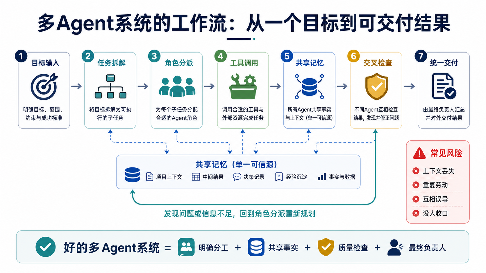
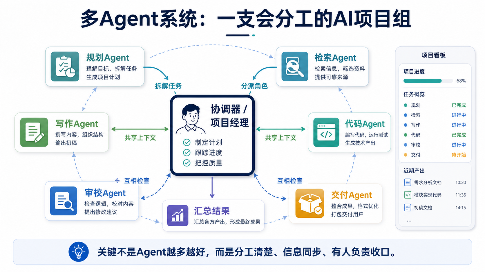

01
确定目标
先说清楚最终要交付什么、给谁看、成功标准是什么。没有清楚目标，后面的分工都会跑偏。
为什么未来的 AI 不只是一个助手，而像一支会分工的项目组？
复杂任务不能只靠一次回答，需要拆步骤、分角色、查资料和做质检。
AI 从聊天工具升级成能参与业务流程的协作系统。
用“小组作业”和“项目经理”理解多Agent的直觉与边界。
AI 正在从“回答问题”走向“完成复杂工作”。多Agent系统解释了这一步为什么需要组织设计。
如果只让一个 AI 从头到尾完成复杂任务，它就像让一个人同时当产品经理、资料员、工程师、编辑和质检员。它可能很快，但也容易漏步骤、忘背景、把未经核实的内容直接写进结果里。
多Agent系统要解决的，是复杂任务里的“分工与协作”问题：谁负责规划，谁负责查资料，谁负责写作，谁负责调用工具，谁负责检查事实，谁负责最后交付。它让 AI 从“单个聪明助手”，变成“有角色、有流程、有检查机制的 AI 项目组”。
这件事对 AI 行业很重要，因为未来很多 AI 应用都不是一次聊天，而是跨工具、跨资料、跨步骤的持续工作：写代码、做研究、处理客服、生成报告、分析数据、运营业务系统，都需要多种能力互相配合。
想象老师布置了一个小组作业：做一份关于城市交通的研究报告。如果只有一个同学包办，他要找资料、画图、写正文、检查错别字、准备展示。只要中间某一步赶时间，整份报告就会出问题。
更靠谱的方式是组成项目组：组长先拆任务；资料同学去找可靠来源；数据同学整理表格；写作同学把内容讲清楚；审校同学检查逻辑和事实；最后组长统一风格并交作业。
多Agent系统也是这个道理。每个 Agent 不一定都“更聪明”，但它们可以各自专注一个角色。真正的关键不是人多，而是分工清楚、信息同步、互相检查，并且有人负责最后收口。

多Agent系统通常不是让一群 AI 随便聊天，而是把目标、角色、工具、记忆和检查点编排起来。
先说清楚最终要交付什么、给谁看、成功标准是什么。没有清楚目标，后面的分工都会跑偏。
协调器把大任务拆成可执行的小任务，例如“查资料”“写提纲”“生成代码”“核对引用”。
不同 Agent 拿到不同职责。有的负责计划，有的负责检索，有的负责写作，有的负责审查。
所有 Agent 必须看到关键事实、约束、进度和中间结果。否则它们会像没开过会的同事，各说各话。
Agent 可以使用搜索、数据库、代码执行、表格、邮件、文件系统等工具，把想法变成可验证的行动。
一个 Agent 的输出可以交给另一个 Agent 检查，例如事实核查、边界测试、格式校对和风险识别。
协调器把多个结果合并，解决冲突，统一口径，避免用户收到一堆互相矛盾的片段。
系统保存过程、证据、错误和人工修改意见，用来评估质量，也方便下一次改进。

| 术语 | 一句专业解释 | 一句白话解释 |
|---|---|---|
| Agent 智能体 | 专业解释：能够基于目标进行规划、调用工具并输出结果的软件实体。 | 白话解释：不是只会回答问题的聊天框，而是会接任务、办步骤的 AI 助手。 |
| Coordinator 协调器 | 专业解释：负责拆解任务、分配角色、跟踪进度和汇总输出的控制模块或主 Agent。 | 白话解释：像项目经理，不能什么都亲自做，但要保证团队不跑偏。 |
| Role 角色 | 专业解释：为 Agent 设定的职责边界、能力范围和输出要求。 | 白话解释：告诉某个 AI“你今天只负责查资料，不要顺手写结论”。 |
| Task Decomposition 任务拆解 | 专业解释：把复杂目标拆成多个较小、可执行、可检查的子任务。 | 白话解释：把“写一份报告”拆成找资料、列提纲、写正文、查事实。 |
| Shared Memory 共享记忆 | 专业解释：多个 Agent 可读写的上下文、事实、中间结果和状态记录。 | 白话解释：团队共用的白板，大家都在上面看进度和关键资料。 |
| Handoff 交接 | 专业解释：一个 Agent 将任务结果、上下文和下一步要求传递给另一个 Agent。 | 白话解释：像交接班，不能只说“我做完了”，还要说清楚做了什么、还缺什么。 |
| Verifier 校验者 | 专业解释：专门检查输出质量、事实可靠性、格式合规和风险问题的 Agent 或规则。 | 白话解释：团队里的审稿人，专门挑错和补漏洞。 |
| Orchestration 编排 | 专业解释：设计多个 Agent 的执行顺序、并行关系、工具调用和异常处理方式。 | 白话解释：像排练一场演出，谁先上、谁接话、谁负责救场，都要安排好。 |
一个真实应用是“AI 研究报告助理”。用户只说一句：“帮我分析一家公司的 AI 战略。”如果让一个 Agent 直接写，很可能会把旧新闻、新观点、猜测和事实混在一起。
多Agent系统会更像研究团队：规划 Agent 先列出研究问题；检索 Agent 找公司公告、财报、访谈和可信新闻；数据 Agent 整理收入、投入和产品线；写作 Agent 组织成可读报告；校验 Agent 检查引用是否真实、结论是否过度；协调器最后统一结构并生成可交付文件。
这样做的价值，不只是“多几个 AI 同时干活”。真正的价值是把复杂工作变得可追踪：每个结论来自哪里、哪个步骤检查过、哪里还需要人工判断，都能被看见。